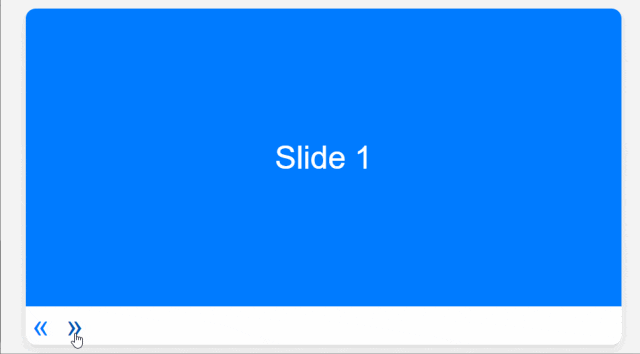

HaoTian · 2024-10-05 21:24:15
在前端开发中，轮播图是比较常用的元素，不仅可以提升用户体验，还能有限的展示页面内容。
今天，我们将探索一个轻量级、功能强大的 JavaScript 库——Glide.js，它专门用于创建滑块和轮播效果。
Glide.js 是一个独立、无依赖的 JavaScript 开源轮播组件，具有轻量级、灵活性和快速响应的特点，专为滑动体验而设计。无论是新手还是经验丰富的开发者，Glide.js 都能满足你对滑动功能的所有需求。
特点
Glide.js 完全自给自足，无需额外的库或框架。Rollup、Webpack 和 Vite 等现代构建工具，方便集成到现有项目中。你可以通过 npm 安装 Glide.js：
npm install @glidejs/glide
为了方便演示，示例中采用 CDN 引入样式文件和脚本：
<link
rel="stylesheet"
href="https://cdn.jsdelivr.net/npm/@glidejs/glide/dist/css/glide.core.min.css"
/>
<script src="https://cdn.jsdelivr.net/npm/@glidejs/glide/dist/glide.min.js"></script>
创建 HTML 结构：
<div class="glide">
<div class="glide__track" data-glide-el="track">
<ul class="glide__slides">
<li class="glide__slide">Slide 1</li>
<li class="glide__slide">Slide 2</li>
<li class="glide__slide">Slide 3</li>
</ul>
</div>
<div class="glide__arrows" data-glide-el="controls">
<button class="glide__arrow glide__arrow--left" data-glide-dir="<">
«
</button>
<button class="glide__arrow glide__arrow--right" data-glide-dir=">">
»
</button>
</div>
</div>
data-glide-el="track" 和 data-glide-el="controls" 是 Glide 标记。接下来，初始化 Glide.js：
new Glide(".glide").mount();
只需一行 JS 即可实现轮播图，演示效果（完整代码回复 demo 获取）：
Glide.js 支持多种配置选项，如类型、每视图数量、焦点位置等。此外，它还提供了 API 方法，如go()、mount()、destroy() 等，以便更细致地控制滑动行为。
Glide.js 支持响应式设计，你可以定义不同的断点和设置，以确保在不同设备上都能提供良好的用户体验。
new Glide(".glide", {
type: "carousel",
perView: 4,
breakpoints: {
800: {
perView: 2,
},
480: {
perView: 1,
},
},
}).mount();
两者都是流行的 JavaScript 轮播图库，但各自有不同的特点和优势。Swiper 的优点在于它功能强大、高度可定制，支持丰富的滑动效果和配置选项，适合有复杂交互需求的项目。而 Glide.js 则以轻量级和简单易用著称，它的 API 直观，适合注重性能和简洁性的项目。
如果你需要一个具有多种滑动效果、导航、分页等高级功能且对性能要求不是极致严格的项目，Swiper 是一个不错的选择。如果你更倾向于一个轻量级的库，且希望快速实现基本的滑动和轮播功能，Glide.js 将更适合你的需求。
Glide.js 是一个现代、轻量级的滑动库，它提供了丰富的配置选项和良好的浏览器兼容性。无论你的项目需要一个简单的图片轮播还是复杂的内容滑动，Glide.js 都能满足你的需求。